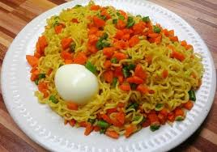

Indomie

Description
How to make indomie
Ingredients
- 2 Eggs
- 1 Cup Diced carrots
- 1/2 Cup Chopped Green bean
- Diced Onioins and pepper
- 2 Packs of Noodles
- Noodle Follow-come spices
Steps
- Set a pot on heat, add two cups of water and allow to boil
- Boil eggs separately, deshell and set aside
- In the pot with boiling water, combine noodles, pepper, onions, carrots, and green beans
- Allow cooking for 3 minutes, add the follow come spices, allow another minute
- Stir together and serve with the boiled eggs